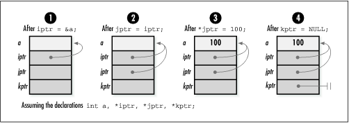

2.1 Pointer Fundamentals
Recall that a pointer is simply a
variable that stores the address where a piece of data resides
in memory rather than storing the data itself. That is,
pointers contain memory addresses.
Even for experienced developers, at times this level of
indirection can be a bit difficult to visualize, particularly
when dealing with more complicated pointer constructs, such as
pointers to other pointers. Thus, one of the best things we
can do to understand and communicate information about
pointers is to draw diagrams (see Figure
2.1). Rather than listing actual addresses in diagrams,
pointers are usually drawn as arrows linking one location to
another. When a pointer points to nothing at all—that is, when
it is set to NULL—it is illustrated as a line terminated with
a double bar (see Figure
2.1, step 4).
As with other types of variables, we should
not assume that a pointer points anywhere useful until we
explicitly set it. It is also important to remember that
nothing prevents a pointer in C from pointing to an invalid
address. Pointers that point to invalid addresses are
sometimes called dangling
pointers. Some examples of programming errors that
can lead to dangling pointers include casting arbitrary
integers to pointers, adjusting pointers beyond the bounds of
arrays, and deallocating storage that one or more pointers
still reference.

|